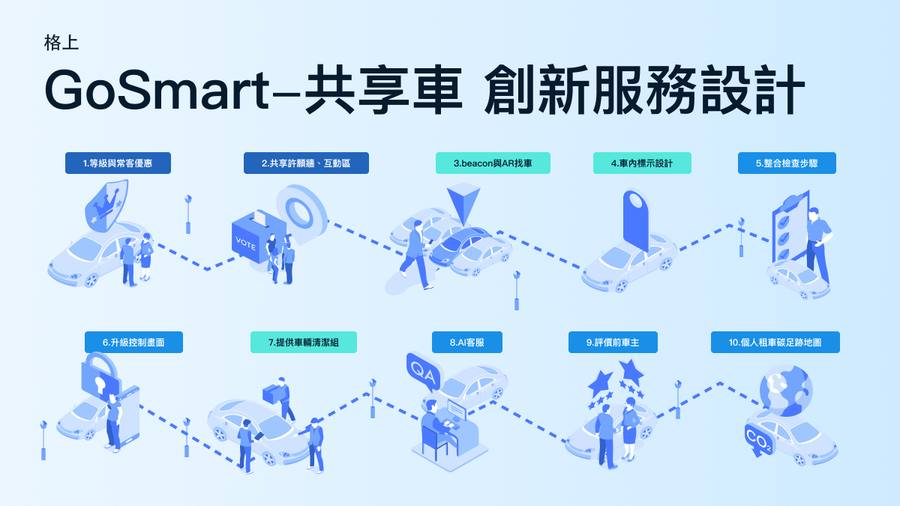
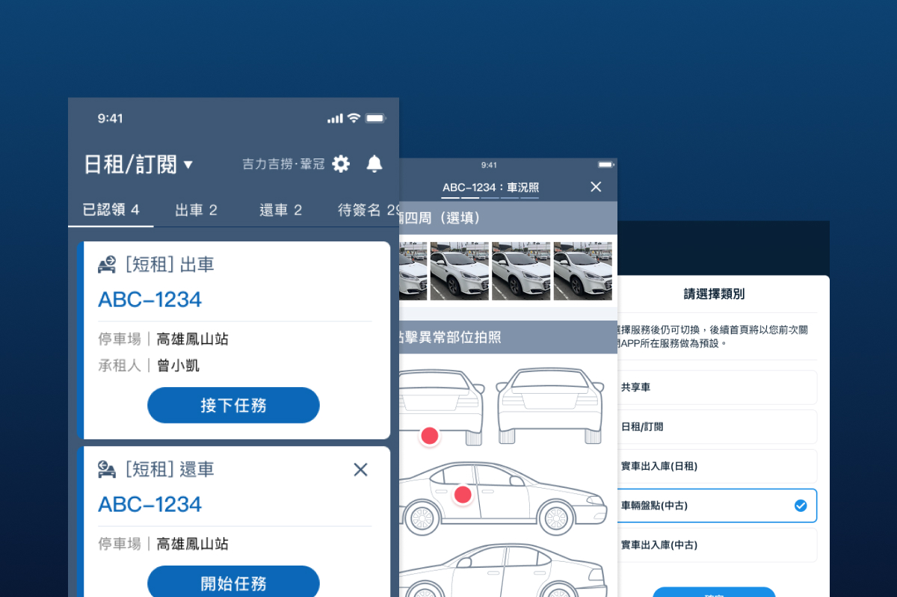
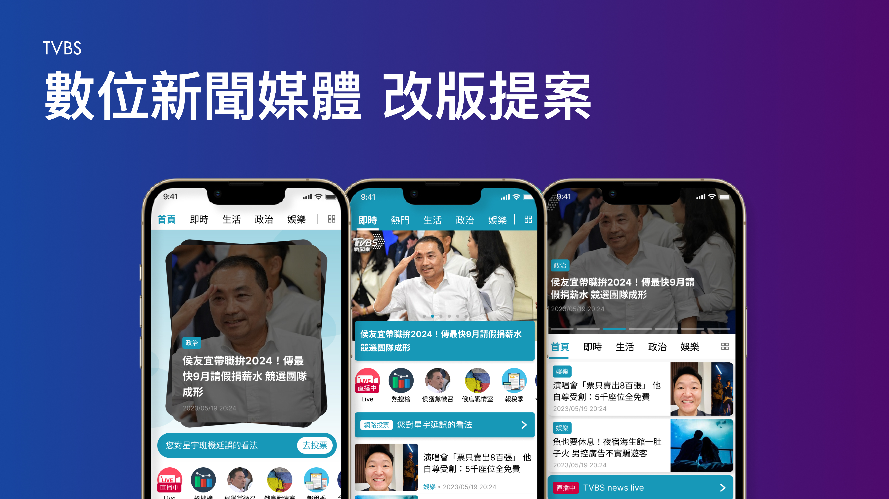
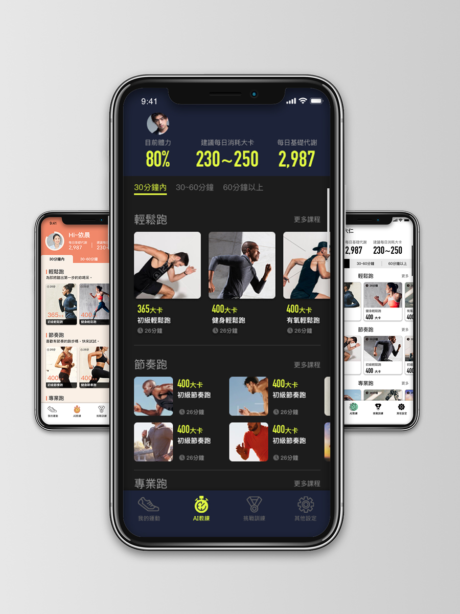

SCROLL
用設計思考，
探索更多|
設計理念
我相信，
好的設計不止於視覺的驚豔，
而是用設計思考打破框架，
為產品探索更多可能性。
走入真實情境，
從敏捷探索到跨團隊對齊。
我擅長以設計思維為核心，
在策略導向與落地執行之間，
用直覺且體貼的體驗，
為使用者與商業創造更多可能。
設計理念
我相信，
好的設計不止於視覺的驚豔，
而是用設計思考打破框架，
為產品探索更多可能性。
走入真實情境，
從敏捷探索到跨團隊對齊。
我擅長以設計思維為核心，
在策略導向與落地執行之間，
用直覺且體貼的體驗，
為使用者與商業創造更多可能。
About
年
數位產品設計經歷
檔
參與專案數
款
上線產品
無限量
探索好奇心
五專
明志科技大學 工業設計系
大學
輔仁大學 應用美術系 視覺傳達組
研究所
政治大學 大眾傳播所
設計脈絡
我能因應時間與專案需求，
靈活彈性調整自己的設計流程。
以下流程為條件允許時的完整實踐：
導入適切的研究方法，挖掘痛點與專案限制，錨定核心問題。
收斂質化與量化洞察，確立設計原則與衡量指標，聚焦產品目標。
透過線框稿與互動原型快速發散解法，及早驗證概念可行性。
完善高保真視覺與設計系統規範，確保工程端高效率、精準落地。
結合測試與數據回饋持續迭代，修復體驗斷點並推動功能演進。

智慧移動｜在實務限制下完整執行服務設計流程，推動創新提案落地實際上線
在既有業務與技術限制下執行完整設計流程。提出10大創新服務提案且過半實際上線，成功優化核心租借體驗。

智慧移動｜建構高擴展性視覺規範，統一多端會員體驗
統一多端產品的視覺語言，為會員系統建構具高擴展性與一致性的設計系統。

智慧移動｜重構首頁資訊架構，創造高效且直覺的全新租車體驗
全面重構首頁資訊架構，為大眾用戶帶來直覺的操作體驗，大幅提升日常租車效率。

智慧移動｜導入任務導向調度邏輯，建構高擴充性的企業維運系統
針對營業同仁調度流程導入「任務化」邏輯，打造具備高度可擴充性的專業企業級管理工具。

新聞媒體｜順應大眾數位閱聽習慣，在密集資訊中開創流暢動線
順應大眾數位閱聽習慣，在密集的新聞資訊中開創流暢動線，規劃符合當前閱讀習慣的數位體驗。

醫療科技｜結合生理監測與初階跑者痛點，打造具引導感的運動習慣
將生理監測結合初階跑者痛點，打造具引導感的介面，陪伴用戶建立運動習慣並看見自我進步。
醫療科技｜跨界協作硬體團隊，獨立規劃線上產品核心功能與亮點
與硬體團隊跨界協作，獨立承擔專案管理，自主規劃線上產品核心功能與亮點，展現獨立推進實力。

金融科技｜在限制下兼顧管理與設計，重組功能架構以建立專業信任感
在既有框架限制下兼顧專案管理與設計，重構官方網站功能架構，建立專業且具信任感的品牌形象。